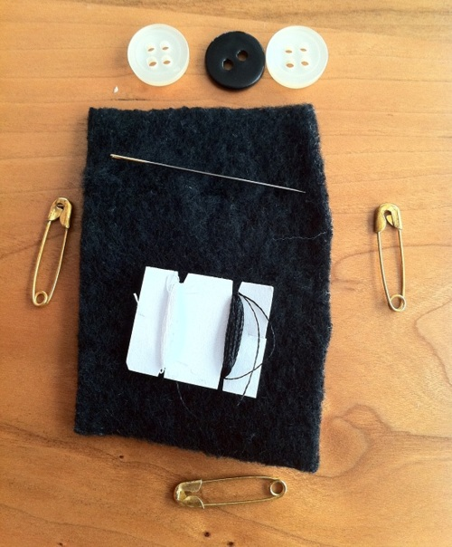
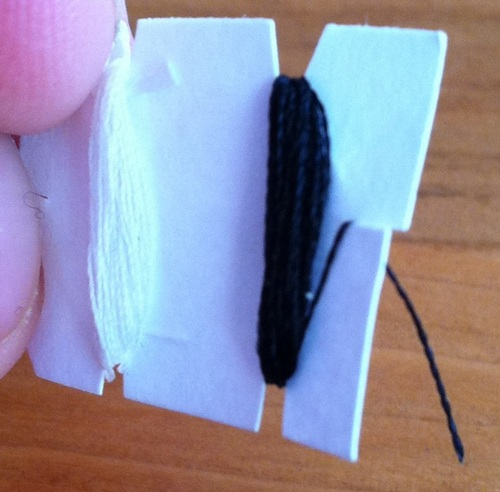

The MacGyver Kit

The inspiration for this project was simple: I rubbed my eyes. For those of you who don’t wear contact lenses, you’re not aware of the peril I was in. Contact lenses are amazing little beasties, but if your eyes are dry (and mine were) they’ll pop off and instantly dry up into expensive, transparent raisins. You then have about 45 seconds to fumble about and find saline or water to have any hope of getting them back in.
No problem…if you’re at home. If you’re twenty miles away on campus, not so much. Thankfully I found a drinking fountain and spent the rest of the day with one gritty, filmy contact lens and a headache.
Thus the MacGyver Kit was born.*
This kit fixes things that’ll ruin your day: headaches, backaches, colds, bad breath, blisters, cracked lips, unexpected trips to the beach, hangnails, parking meters and loud people. It fits in almost any bag and goes in carry-on luggage.
First, you need a container. I made my own box pouch using this pattern, but you can use a makeup bag or other travel case. My bag measures 5” long by 3” wide by 2” tall - about the size of a can of soda.

And here’s what’s on the inside (slightly bigger image here):
My current rev of the kit contains (starting from front left):
- Bandaids (5)
- Knuckle bandaid (1)
- Blister pads (3)
- Sewing kit with:
- needle
- black and white thread
- black and white buttons
- safety pins (3)
- Excedrin
- Throat lozenge
- Benadryl
- Dayquil
- Prescription medication
- Ibeprofin
- $1 in quarters
- $20 bill
- Contact lens case containing:
- lip balm
- suntan lotion
- Spare set of contact lenses
- Saline eye solution
- Floss
- Nail clippers
- Tweezers
- Hair bands
- Toothpaste
- Deodorant
- Sacred tokens of my people
- More sacred tokens of my people
- Earplugs
- Cotton string
The medications are in plastic wrap. I wrote what they are on a scrap of paper and put it under the final fold of wrap:

The sewing kit is DIY too. It’s made out of a scrap of fleece leftover from another sewing project, and closed by the safety pins:

Inside

The thread is wrapped around a notched piece of paper.

Would you believe I still have a couple square inches of room in my kit? I’m considering adding:
- Instructions. First aid, emergency numbers, knot tying, card games, submarine plans, you name it. Print it out in tiny tiny print and shove it in.
- Superglue. Never know when you might need to stick a thing to another thing. Or fix your pantyhose.
- Duct tape. Or tape a thing to a thing.
- Thumb drive. With a TrueCrypt drive, I can carry all my important documents around with me. You never know when you might need your 2007 taxes.
Cost? That’ll vary by how much you have on hand. I think I spent about $20 on items specifically for the kit. It’s more than worth it - the bandaids, blister packs and womanly things have already been replaced.
And I never have to be afraid of rubbing my eyes again.
~~
* Alternative, less family friendly name: The Oh Sh*t Kit.
- 0 comments
- —
- posted in awesome, be prepared, kits, regular